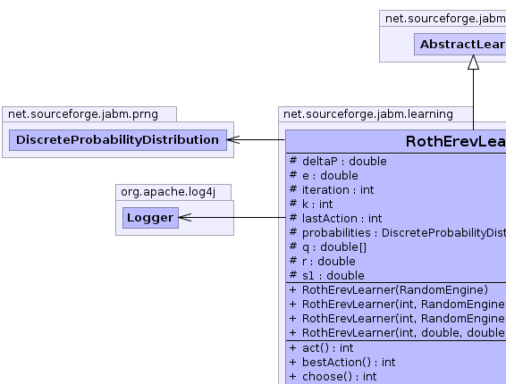
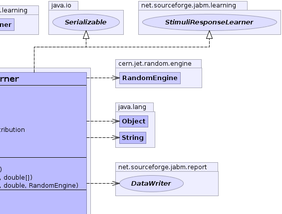
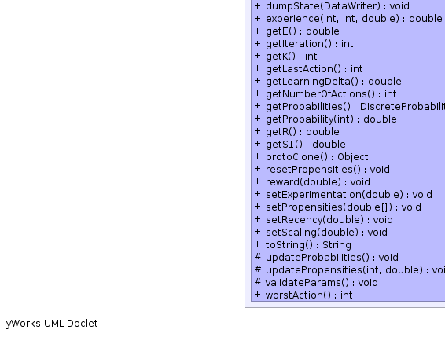
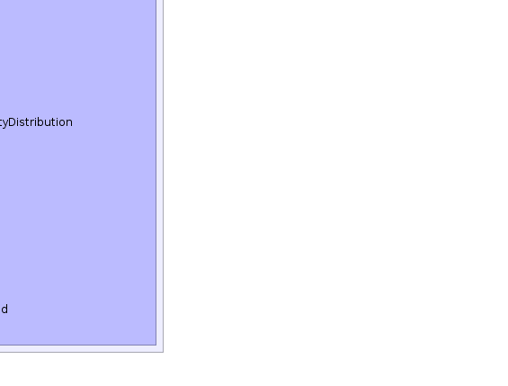

net.sourceforge.jabm.learning.AbstractLearner
net.sourceforge.jabm.learning.RothErevLearner
net.sourceforge.jabm.learning.AbstractLearner
net.sourceforge.jabm.learning.RothErevLearner
|
|||||||||
| PREV CLASS NEXT CLASS | FRAMES NO FRAMES | ||||||||
| SUMMARY: NESTED | FIELD | CONSTR | METHOD | DETAIL: FIELD | CONSTR | METHOD | ||||||||
java.lang.Object
public class RothErevLearner
A class implementing the Roth-Erev learning algorithm. This learning algorithm is designed to mimic human-like behaviour in extensive form games. See:
A.E.Roth and I. Erev "Learning in extensive form games: experimental data and simple dynamic models in the intermediate term" Games and Economic Behiour, Volume 8
|  |  |
|  |  |
| Field Summary | |
|---|---|
protected double |
deltaP
The total amount of update to the probability vector on the last iteration. |
protected double |
e
The experimentation parameter. |
protected int |
iteration
The current iteration. |
protected int |
k
The number of choices available to make at each iteration. |
protected int |
lastAction
The last action chosen. |
protected DiscreteProbabilityDistribution |
probabilities
Probabilities for each possible action. |
protected double[] |
q
Propensity for each possible action. |
protected double |
r
The recency parameter. |
protected double |
s1
The scaling parameter. |
| Fields inherited from class net.sourceforge.jabm.learning.AbstractLearner |
|---|
monitor |
| Constructor Summary | |
|---|---|
RothErevLearner(int k,
double r,
double e,
double s1,
cern.jet.random.engine.RandomEngine prng)
Construct a new learner. |
|
RothErevLearner(int k,
cern.jet.random.engine.RandomEngine prng)
|
|
RothErevLearner(int k,
cern.jet.random.engine.RandomEngine prng,
double[] propensities)
|
|
RothErevLearner(cern.jet.random.engine.RandomEngine prng)
|
|
| Method Summary | |
|---|---|
int |
act()
Generate the next action for this learner. |
int |
bestAction()
|
int |
choose()
Choose a random number according to the probability distribution defined by the probabilities. |
void |
dumpState(DataWriter out)
Write out our state data to the specified data writer. |
double |
experience(int i,
int action,
double reward)
The experience function |
double |
getE()
|
int |
getIteration()
|
int |
getK()
Get the total number of actions. |
int |
getLastAction()
|
double |
getLearningDelta()
Return a value indicative of the amount of learning that occured during the last iteration. |
int |
getNumberOfActions()
Get the total number of actions |
DiscreteProbabilityDistribution |
getProbabilities()
Get the probability distribution corresponding to the current propensities. |
double |
getProbability(int i)
Get the probability of the ith action. |
double |
getR()
|
double |
getS1()
|
java.lang.Object |
protoClone()
|
void |
resetPropensities()
|
void |
reward(double reward)
Reward the last action taken by the learner according to some payoff. |
void |
setExperimentation(double e)
|
void |
setPropensities(double[] q)
Replace the current propensities with the supplied propensity array. |
void |
setRecency(double r)
|
void |
setScaling(double s1)
|
java.lang.String |
toString()
|
protected void |
updateProbabilities()
Update the probabilities from the propensities. |
protected void |
updatePropensities(int action,
double reward)
Update the propensities for each possible action. |
protected void |
validateParams()
|
int |
worstAction()
|
| Methods inherited from class net.sourceforge.jabm.learning.AbstractLearner |
|---|
monitor |
| Methods inherited from class java.lang.Object |
|---|
clone, equals, finalize, getClass, hashCode, notify, notifyAll, wait, wait, wait |
| Methods inherited from interface net.sourceforge.jabm.learning.Learner |
|---|
monitor |
| Field Detail |
|---|
protected int k
protected double r
protected double e
protected double s1
protected double[] q
protected DiscreteProbabilityDistribution probabilities
protected int iteration
protected int lastAction
protected double deltaP
| Constructor Detail |
|---|
public RothErevLearner(int k,
double r,
double e,
double s1,
cern.jet.random.engine.RandomEngine prng)
k - The no. of possible actions.r - The recency parameter.e - The experimentation parameter.public RothErevLearner(cern.jet.random.engine.RandomEngine prng)
public RothErevLearner(int k,
cern.jet.random.engine.RandomEngine prng)
public RothErevLearner(int k,
cern.jet.random.engine.RandomEngine prng,
double[] propensities)
| Method Detail |
|---|
public java.lang.Object protoClone()
protected void validateParams()
public int act()
act in interface DiscreteLearnerpublic void reward(double reward)
reward in interface StimuliResponseLearnerreward - The payoff for the last action taken by the learner.public int choose()
protected void updatePropensities(int action,
double reward)
action - The last action chosen by the learnerprotected void updateProbabilities()
public double experience(int i,
int action,
double reward)
i - The action under considerationaction - The last action chosenpublic void setPropensities(double[] q)
q - The new propensity array to use.public void resetPropensities()
public void setRecency(double r)
public void setExperimentation(double e)
public void setScaling(double s1)
public void dumpState(DataWriter out)
Learner
dumpState in interface LearnerdumpState in class AbstractLearnerpublic int getK()
public int getNumberOfActions()
getNumberOfActions in interface DiscreteLearnerpublic double getLearningDelta()
Learner
getLearningDelta in interface LearnergetLearningDelta in class AbstractLearnerpublic double getProbability(int i)
public DiscreteProbabilityDistribution getProbabilities()
public double getE()
public int getIteration()
public int getLastAction()
public double getR()
public double getS1()
public java.lang.String toString()
toString in class java.lang.Objectpublic int bestAction()
bestAction in interface StimuliResponseLearnerpublic int worstAction()
worstAction in interface StimuliResponseLearner
|
|||||||||
| PREV CLASS NEXT CLASS | FRAMES NO FRAMES | ||||||||
| SUMMARY: NESTED | FIELD | CONSTR | METHOD | DETAIL: FIELD | CONSTR | METHOD | ||||||||